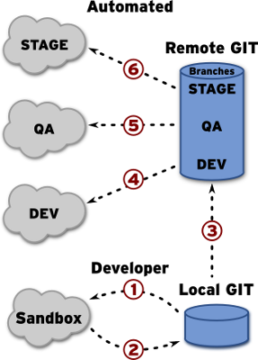
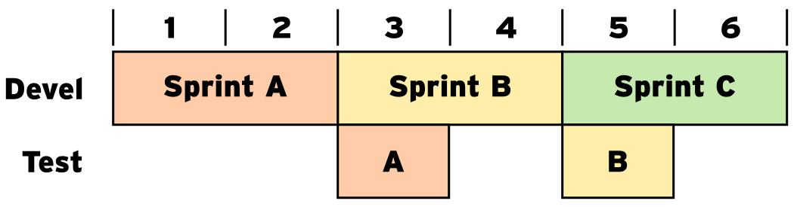
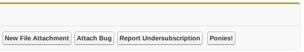

CI and CD in Salesforce
Release Early and Often
Who we are.
- Certified Salesforce Administrator
What is CI?
CI stands for Continuous Integration
Principles
- Maintain a code repository
- Automate the build
- Make the build self-testing
- Test in a clone of prod
What is CD?
CD stands for Continuous Delivery
Principles
- Low-risk releases are incremental
- Decouple deployment and release
- Focus on reducing batch size
- Optimize for resilience
source: informIT
Sandbox Structure

Deployments happen from bottom to top
- Developer pushes from Git to sandbox
- Developer pulls from sandbox to Git
- Features are pushed to Git
- Git commits are automatically pushed to CI
- "Manual" push to QA
- "Manual" push to STAGE
- "Manual" push to PROD
Ideal Release Cadence

Using SCRUM methodolgy we have a new releasable artifact every two weeks
QA test for a week following the spring
During the sprint a developer is the release shepard to assist QA with any needs they have
Releasing to prod with limited audience
What
- Release with no UI front end
- Release with special flag to show data
- Release to full userbase
How
- Add "secret" URL parameter
- Alter VisualForce to only render when parameter is set
- Profit!
Ponies - Hidden features in action
Action bar after appending "&ponies=true" to url

←
→
/
#